정보처리산업기사 (2010-03-07 기출문제)
1과목: 데이터 베이스
1. A is a relation with cardinality 3 and degree 5 and B is relation with cardinality 4 and degree 2. When we combine relation A and B by the cartesian product, what relation does come out?
- cardinality 4 and degree 2
- cardinality 3 and degree 5
- cardinality 7 and degree 10
- cardinality 12 and degree 7
(정답률: 63%)

2. Which of the following does not belong to the DML statements of SQL?
- ALTER
- INSERT
- DELETE
- UPDATE
(정답률: 78%)
3. 논리적 데이터 모델 중 오너-멤버(Owner-Member) 관계를 가지며, CODASYL DBTG 모델이라고도 하는 것은?
- E-R 모델
- 관계 데이터 모델
- 계층 데이터 모델
- 네트워크 데이터 모델
(정답률: 72%)
4. 인사 테이블의 주소 필드에 대한 데이터 타입을 VARCHAR(10)으로 정의하였으나, 필드 길이가 부족하여 20바이트로 확장하고자 한다. 이에 적합한 SQL 명령은?
- MODIFY FIELD
- MODIFY TABLE
- ALTER TABLE
- ADD TABLE
(정답률: 68%)
5. 서브루틴 레벨에서 복귀 번지를 기억시키는 경우 가장 적합한 자료 구조는?
- 큐
- 데크
- 연결 리스트
- 스택
(정답률: 75%)
6. 시스템 카탈로그에 대한 설명으로 옳지 않은 것은?
- 시스템 자체에 관련 있는 다양한 객체에 관한 정보를 포함 하는 시스템 데이터베이스 이다.
- 데이터 사전이라고도 한다.
- 무결성 확보를 위하여 일반 사용자는 내용을 검색해 볼 수 없다,.
- 기본 테이블, 뷰, 인덱스, 패키지, 접근 권한 등의 정보를 저장한다.
(정답률: 84%)
7. 다음 SQL문을 관계 대수적으로 표현할 때 필요한 관계연산 자로 가장 적절할 것은?
- JOIN과 SELECT
- SELECT 와 PROJECT
- DIVISION과 SELECT
- JOIN과 PROJECT
(정답률: 58%)
8. 외래 키에 대한 설명으로 옳지 않은 것은?
- 외래 키는 현실 세계에 존재하는 개체 타입들 간의 관계를 표현하는데 중요한 역할을 수행한다.
- 외래 키로 지정되면 참조 릴레이션의 기본 키에 없는 값은 입력할 수 없다.
- 외래 키를 포함하는 릴레이션이 참조 릴레이션이 되고, 대응되는 기본키를 포함하는 릴레이션이 참조하는 릴레이션이 된다.
- 참조 무결성 제약조건과 밀접한 관계를 가진다.
(정답률: 53%)
9. 데이터베이스의 특성으로 옳지 않은 것은?
- Time Accessibility
- Continuous Evolution
- Concurrent Sharing
- Address Reference
(정답률: 62%)
10. 다음 그림에서 트리의 차수는?
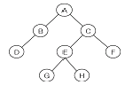
- 2
- 3
- 4
- 8
(정답률: 69%)
11. 릴레이션의 특징으로 옳지 않은 것은?
- 모든 튜플은 서로 다른 값을 갖는다.
- 하나의 릴레이션에서 튜플의 순서는 없다.
- 각 속성은 릴레이션 내에서 유일한 이름을 가지며, 속성의 순서는 큰 의미가 없다.
- 한 릴레이션에 나타난 속성 값은 논리적으로 분해 가능한 값이어야 한다.
(정답률: 69%)
12. 데이터베이스 설계 단계 중 물리적 설계 단계와 거리가 먼 것은?
- 저장 레코드 양식 설계
- 스키마의 평가 및 정제
- 레코드 집중의 분석 및 설계
- 접근 경로 설계
(정답률: 64%)
13. 다음 설명에 해당하는 정렬 기법은?
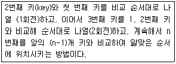
- Insertion Sort
- Bubble Sort
- Selection Sort
- Quick Sort
(정답률: 57%)
14. A→B이고 B→C 일 때 A→C를 만족하는 종속관계를 제거하는 정규화 단계는?
- 1NF→2NF
- 2NF→3NF
- 3NF→BCNF
- 비정규 릴레이션→1NF
(정답률: 65%)
15. 뷰(VIEW)에 대한 설명으로 옳지 않은 것은?
- 논리적 데이터 독립성을 제공한다.
- 뷰의 정의 변경시 ALTER VIEW문을 사용한다.
- 독자적인 인덱스를 가질 수 없다.
- 데이터 접근 제어로 보안을 제공한다.
(정답률: 58%)
16. 다음 트리를 Post-order로 운영할 때 노드 B는 몇 번째로 검사되는가?
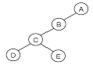
- 2
- 3
- 4
- 5
(정답률: 77%)
17. 해싱에서 동일한 홈 주소로 인하여 충돌이 일어난 레코드들의 집합을 무엇이라고 하는가?
- Bucket
- Collision
- Synonym
- Overflow
(정답률: 70%)
18. 데이터베이스를 구성하는 데이터 개체, 이들 개체 사이의 속성, 이들간에 존재하는 관계, 데이터 구조와 데이터 값들이 갖는 제약 조건에 관한 정의를 총칭해서 무엇이라고 하는가?
- VIEW
- DOMAIN
- SCHEMA
- DBA
(정답률: 76%)
19. 선형 구조에 해당하는 것으로만 짝지어진 것은?
- 스택, 큐, 데크
- 스택, 큐, 트리
- 큐, 데크, 그래프
- 트리, 그래프, 스택
(정답률: 82%)
20. 데이터베이스 설계 단계의 순서로 옳은 것은?
- 개념적 설계 → 논리적 설계 → 물리적 설계
- 논리적 설계 → 개념적 설계 → 물리적 설계
- 개념적 설계 → 물리적 설계 → 논리적 설계
- 물리적 설계 → 개념적 설계 → 논리적 설계
(정답률: 81%)
2과목: 전자 계산기 구조
21. 컴퓨터에서 사용하는 명령어를 기능별로 분류할 때 동일한 분류에 포함되지 않은 것은?
- JMP(jump 명령)
- ADD(addition 명령)
- ROL(rotate left 명령)
- CLC(clear carry 명령)
(정답률: 50%)
22. 마이크로프로그램을 저장하는 제어 메모리는 주로 어떤 메모리를 사용하는가?
- ROM
- CAM
- RAM
- virtual memory
(정답률: 62%)
23. 16진수 (7A.C5)16을 8진수로 변환한 것으로 옳은 것은?
- (82.512)
- (82.612)
- (172.512)
- (172.612)
(정답률: 52%)
24. 16비트를 갖는 명령어 중 OP code가 5비트, operand가 8비트를 차지한다면 명령어의 최대 종류는?
- 5
- 8
- 32
- 256
(정답률: 59%)
25. indirect cycle 동안에 컴퓨터가 수행하는 작업은?
- 명령을 읽는다.
- 오퍼랜드의 번지를 읽는다.
- 오퍼랜드를 읽는다.
- 인터럽트를 처리한다.
(정답률: 58%)
26. n bit의 레지스터 A(An-1An-2…A1A0)와 B(Bn-1Bn-2…B1B0)에 대해 다음의 마이크로 오퍼레이션(micro-operation)을 n번 수행하였다. 이 때, shr은 오른쪽 시프트(right shift), cir은 오른쪽 회전 시프트(rotate right)이다. 어떤 기능을 수행한 것인가?
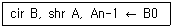
- A의 내용을 B로 직렬 전송(serial transfer)
- B의 내용을 A로 직렬 전송(serial transfer)
- A와 B의 내용을 교환
- B의 내용을 2로 나눈 나머지를 A에 저장
(정답률: 61%)
27. I/O 버스에 연결될 수 있는 선 중 양방향성인 것은?
- interrupt sense line
- data line
- founction line
- device address line
(정답률: 55%)
28. 디스크 드라이브의 한 형태로 용량이 큰 비휘발성 플래시 메모리를 이용하는 것은?
- DVD
- CCD
- 하이브리드 드라이브
- 캐시메모리
(정답률: 43%)
29. 보조기억장치로 부적합한 것은?
- 자기 디스크
- DVD
- 자기 테이프
- SDRAM
(정답률: 59%)
30. 2진수 (1010)2을 그레이(Gray) 코드로 변환한 것으로 옳은 것은?
- 1111
- 1001
- 1011
- 1101
(정답률: 63%)
31. CPU의 하드웨어(hardware) 요소들을 기능별로 분류할 때 포함되지 않는 것은?
- 연산 기능
- 제어 기능
- 입출력 기능
- 전달 기능
(정답률: 42%)
32. 다음과 같은 명령어는 어떤 유형의 번지 명령 방식인가?
- 0-주소
- 1-주소
- 2-주소
- 3-주소
(정답률: 49%)
33. 인터럽트 처리 방식 중 인터럽트 신호선을 공유하면서 연결순서에 따라 우선순위가 결정되는 것은?
- multiple interrupt line 방식
- daisy chain 방식
- software polling 방식
- bus arbitration 방식
(정답률: 55%)
34. 주기억 장치의 영역구분을 크게 둘로 나눌 때 옳은 것은?
- 시스템 프로그램 영역, 사용자 프로그램 영역
- 시스템 프로그램 영역, 운영체제 영역
- 관리자 프로그램 영역, 운영체제 영역
- 관리자 프로그램 영역, 사용자 프로그램 영역
(정답률: 56%)
35. 반도체 기억소자로서 이미 기억된 내용을 자외선을 이용하여 지우고 다시 사용할 수 있는 메모리 소자는?
- SRAM
- DRAM
- EPROM
- PROM
(정답률: 74%)
36. 모든 마이크로오퍼레이션에 대해 서로 다른 마이크로사이클 시간을 할당하는 방법은?
- 비동기식
- 동기고정식
- 동기가변식
- 중앙집중식
(정답률: 51%)
37. 다음과 같은 함수를 카르노맵(karnaugh-map)을 이용하여 간략화한 식은?
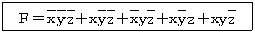
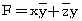
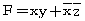
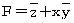
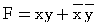
(정답률: 52%)
38. 명령어 실행 과정에서 명령어가 지정한 번지를 수정하기 위한 레지스터는?
- 명령 레지스터
- 프로그램 카운터
- 베이스 레지스터
- 인덱스 레지스터
(정답률: 52%)
39. 인터럽트의 발생 원인으로 틀린 것은?
- 부프로그램 호출
- supervisor call
- 정전
- 불법적인 인스트럭션 수행
(정답률: 61%)
40. 해밍 코드(hamming code)를 만들기 위해서는 BCD코드와 일반적으로 몇 개의 점검 비트(check bit)가 필요한가?
- 1
- 2
- 3
- 4
(정답률: 45%)
3과목: 시스템분석설계
41. 소프트웨어 개발주기 모델 중 폭포수형의 특징으로 옳지 않은 것은?
- 프로젝트 관리 및 자동화가 어렵다.
- 단계별 정의가 분명하고, 각 단계별 산출물이 명확하다.
- 계획 수립→위험 분석→공학화→고객 평가의 순서로 진행된다.
- 전통적인 라이프 사이클 모델이다.
(정답률: 49%)
42. 흐름도의 종류 중 컴퓨터의 입력, 처리, 출력되는 하나의 처리 과정을 그림으로 표시한 것은?
- 프로세스 흐름도
- 프로그램 흐름도
- 시스템 흐름도
- 블록 차트
(정답률: 62%)
43. 소프트웨어의 일반적인 특성으로 거리가 먼 것은?
- 마모에 의하여 소멸되지 않는다.
- 요구나 환경의 변화에 따라 적절히 변형시킬 수 없다.
- 간단히 복사할 수 있다.
- 생산물의 구조가 코드 안에 숨어 있다.
(정답률: 63%)
44. 자료 사전에서 사용되는 기호의 의미로 옳은 것은?
- { } : 자료의 정의
- [ ] : 자료의 생략
- ( ) : 자료의 반복
- * * : 자료의 설명(주석)
(정답률: 71%)
45. 소프트웨어 비용 산정 방법 중 전문가가 독자적으로 감정할 때 발생할 수 있는 편차를 줄이기 위해 단계별로 전문가들의 견해를 조정자가 조정하여 최종 견적을 결정하는 것은?
- 전문가 감정에 의한 방법
- 델파이 방법
- LOC 방법
- COCOMO 방법
(정답률: 50%)
46. 입력 설계 순서로 옳은 것은?
- 입력 정보 발생 설계→입력 정보 매체 설계→입력 정보 수집 설계→입력 정보 투입 설계→입력 정보 내용 설계
- 입력 정보 발생 설계→입력 정보 수집 설계→입력 정보 매체 설계→입력 정보 투입 설계→입력 정보 내용 설계
- 입력 정보 발생 설계→입력 정보 투입 설계→입력 정보 수집 설계→입력 정보 매체 설계→입력 정보 내용 설계
- 입력 정보 발생 설계→입력 정보 수집 설계→입력 정보 투입 설계→입력 정보 매체 설계→입력 정보 내용 설계
(정답률: 63%)
47. 프로세스 설계 원칙으로 거리가 먼 것은?
- 신뢰성과 정확성을 고려하여 처리 과정을 명확하게 표현한다.
- 발생 가능성이 있는 오류에 대한 체크 시스템도 고려한다.
- 시스템의 상태, 구성 요소 및 기능 등을 개별적으로 표시한다.
- 정보의 흐름, 처리 과정에 대한 이해의 수단이 되도록 표준화한다.
(정답률: 56%)
48. 시스템 문서화의 필요성에 대한 이유로 거리가 먼 것은?
- 시스템 유지보수의 용이성을 위해
- 업무 인수 인계시 업무 내용을 쉽게 파악하기 위해
- 시스템 개발 후의 변경에 따른 혼란을 방지하기 위해
- 오류 발생시 책임 구분을 명확히 하기 위해
(정답률: 75%)
49. 대화형 입.출력 방식 중 프롬프트 방식에 대한 설명으로 옳지 않은 것은?
- 값싼 키보드로 충분하다.
- 명령어 처리 방법의 구현이 쉽다.
- 명령어를 복합적으로 활용하면 복잡한 명령도 가능하다.
- 복잡한 명령들을 배울 필요가 없다.
(정답률: 63%)
50. 다음과 같은 오류 발생 형태의 종류는?
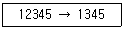
- Transcription Error
- Transposition Error
- Addition Error
- Omission Error
(정답률: 61%)
51. 파일 설계 단계 중 파일매체 검토시 고려사항이 아닌 것은?
- 파일 활동률
- 작동 용이성
- 정보량
- 처리 시간
(정답률: 51%)
52. 럼바우의 객체지향 분석 기법에서 자료 흐름도와 밀접한 관계가 있는 것은?
- Object Modeling
- Dynamic Modeling
- Function Modeling
- Total Modeling
(정답률: 42%)
53. 출력 정보 분배시 고려사항으로 거리가 먼 것은?
- 분배 책임자
- 분배의 방법 및 형태
- 분배의 주기 및 시기
- 분배 항목 명칭
(정답률: 45%)
54. 프로세스의 표준 처리 패턴 중 어떤 파일에서 특정한 조건에 만족하는 정보를 추출해 내는 처리는?
- Matching
- Merge
- Extract
- Distribution
(정답률: 48%)
55. 모듈 작성시 주의 사항으로 거리가 먼 것은?
- 적절한 크기로 작성한다.
- 모듈 간의 결합도를 최대화한다.
- 보기 쉽고 이해하기 쉽도록 작성한다.
- 자료 추상화와 정보은닉의 성격을 가지도록 한다.
(정답률: 62%)
56. 그룹 분류 코드에 대한 설명으로 옳지 않은 것은?
- 기계 처리에 적합한 코드 체계이다.
- 적은 자리수로 많은 그룹을 구분할 수 있다.
- 융통성이 있으므로 데이터 항목의 추가 보충이 용이하다.
- 코드를 세분해서 사용하므로 분류상의 의미가 명확하여 알기 쉽다.
(정답률: 33%)
57. 코드 오류 검출 방법 중 다음 설명에 해당하는 것은?
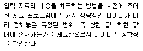
- Numeric Check
- Balance Check
- Limit Check
- Validity Check
(정답률: 67%)
58. 파일 설계 순서로 옳은 것은?
- 작성 목적 확인→매체의 검토→특성 조사→항목 검토→편성법 검토
- 작성 목적 확인→항목 검토→특성 조사→매체의 검토→편성법 검토
- 작성 목적 확인→항목 검토→편성법 검토→특성 조사→매체의 검토
- 작성 목적 확인→특성 조사→항목 검토→매체의 검토→편성법 검토
(정답률: 61%)
59. 시스템의 특성 중 다음 설명에 해당하는 것은?
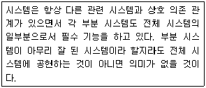
- 자동성
- 종합성
- 목적성
- 제어성
(정답률: 71%)
60. 색인 순차 파일의 인덱스 영역이 아닌 것은?
- 오버플로우 인덱스 영역
- 트랙 인덱스 구역
- 실린더 인덱스 영역
- 마스터 인덱스 영역
(정답률: 65%)
4과목: 운영체제
61. 버퍼링에 대한 설명으로 옳지 않은 것은?
- CPU의 효율적인 시간 관리를 지향하기 위해 도입되었다.
- 주기억장치와 CPU간 또는 주기억장치와 입/출력 장치간의 데이터 이동에 있어서의 시간 관리의 효율화를 도모한다.
- 용량이 큰 자기디스크를 아주 큰 버퍼처럼 물리적인 중간 저장 장치로 사용한다.
- 입/출력 장치의 느린 속도를 보완해 주는 방법으로 버퍼링이라는 개념이 출현하였다.
(정답률: 60%)
62. SJF 기법을 적용하여 작업 스케줄링 할 경우, 다음 작업들의 평균 반환 시간은?
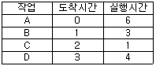
- 5.25
- 6.25
- 6.75
- 7.75
(정답률: 40%)
63. 3 개의 페이지 프레임을 갖는 시스템에서 페이지 참조순서가1, 2, 0, 4, 1, 3 일 경우 FIFO 알고리즘에 의한 최종 페이지 대치 결과는?
- 1, 4, 2
- 1, 2, 0
- 4, 1, 3
- 4, 1, 0
(정답률: 71%)
64. 임계구역의 원칙으로 옳지 않은 것은?
- 두 개 이상의 프로세스가 동시에 사용할 수 있다.
- 순서를 지키면서 신속하게 사용한다.
- 하나의 프로세스가 독점하게 해서는 안 된다.
- 임계구역이 무한 루프에 빠지지 않도록 주의해야 한다.
(정답률: 74%)
65. 프로세스보다 더 작은 단위이며, 다중 프로그래밍을 지원하는 시스템 하에서 CPU에게 보내져 실행되는 또 다른 단위를 의미하는 것은?
- BLOCK
- THREAD
- SUSPEND
- RESUME
(정답률: 67%)
66. 세그먼테이션 기법에 대한 설명 중 옳지 않은 것은?
- 각 작업이 갖고 있는 세그먼테이션들에 대한 정보를 갖고 있는 세그먼트 맵 테이블이 필요하다.
- 각 세그먼트는 고유한 이름과 크기를 갖는다.
- 기억 장치의 사용자 관점을 보존하는 기억 장치관리 기법이다.
- 하나의 작업을 똑같은 크기의 세그먼트라는 물리적인 단위로 나누어 주기억 공간의 페이지 프레임에 들어가도록 한다.
(정답률: 51%)
67. 현 상태가 그림과 같이 주어졌을 때 최적적합에 의한 20KB크기 J3의 할당 결과는?
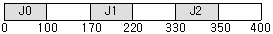
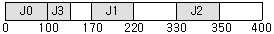
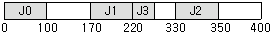
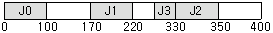
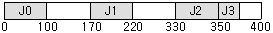
(정답률: 56%)
68. UNIX의 특징으로 옳지 않은 것은?
- 대화식 운영체제이다.
- 다중 사용자, 다중 작업을 지원한다.
- 리스트 구조의 파일 시스템을 갖는다.
- 대부분 C 언어로 작성되어 이식성이 높다.
(정답률: 63%)
69. UNIX 파일 시스템 구조에서 데이터 블록의 주소 정보를 보관하고 있는 것은?
- 부트 블록
- 슈퍼 블록
- I-node 블록
- 데이터 블록
(정답률: 61%)
70. 행은 사용자 영역, 열은 객체를 나타내며, 각 항은 접근 권한의 집합으로 구성되는 자원 보호 기법은?
- Access Control Matrix
- Access Control List
- Capability List
- Lock/Key
(정답률: 40%)
71. 자원 할당 그래프와 관계되는 교착상태 해결 기법은?
- Prevention
- Avoidance
- Recovery
- Detection
(정답률: 32%)
72. 워킹 셋(Working Set)에 대한 설명으로 가장 적합한 것은?
- 주기억장치에는 최대한의 워킹 셋을 올려놓아야 한다.
- 주기억 장치내의 워킹 셋을 감소시키면 반대로 스래싱이 증가할 수 있다.
- 윈도우의 크기(설정 시간 간격)가 증가하면 주기억장치에 유지되는 워킹 셋은 작아진다.
- 워킹 셋 기억장치 관리 기법을 구현한다는 것은 구성이 빠르게 바뀌게 되므로 오버헤드를 초래할 수 있다.
(정답률: 40%)
73. 사용자 Password에 대한 설명으로 옳지 않은 것은?
- 추측 가능한 사용자의 전화번호, 생년월일 등으로는 구성하지 않는 것이 바람직하다.
- 암호가 짧을수록 추측에 의한 암호 발각 가능성이 희박하다.
- 암호는 자주 변경하는 것이 바람직하다.
- 불법 액세스를 방지하는데 사용된다.
(정답률: 79%)
74. 초기 헤드의 위치가 100번 트랙이고 디스크 대기 큐에 다음과 같은 순서의 액세스 요청이 대기 중이다. SSTF 스케줄링 기법을 사용하여 액세스 요청을 모두 처리하기 위한 헤드의 총 이동거리는? (단, 가장 안쪽 트랙 : 0, 가장 바깥쪽 트랙 : 150)
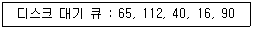
- 102
- 112
- 128
- 178
(정답률: 53%)
75. 분산처리 운영체제 시스템의 특징으로 거리가 먼 것은?
- 시스템 설계 단순화
- 연산 속도 향상
- 자원 공유
- 신뢰성 증진
(정답률: 65%)
76. 우선순위(Priority) 스케줄링에 대한 설명으로 옳지 않은 것은?
- 우선순위의 등급은 내부적 요인과 외부적 요인에 따라 부여할 수 있다.
- 각 작업마다 우선순위가 주어지며, 우선순위가 제일 높은 작업에게 먼저 프로세서가 할당된다.
- 기아 상태(Starvation)가 발생할 수 있다.
- 우선순위 계산식은 (대기시간+서비스시간) / 서비스시간 이다.
(정답률: 41%)
77. 운영체제의 성능 평가 기준 중 컴퓨터 시스템 내의 한정된 각종 자원을 여러 사용자가 요구할 때, 신속하고 충분히 지원해 줄 수 있는 정도를 의미하는 것은?
- Throughput
- Reliability
- Turn Around Time
- Availability
(정답률: 44%)
78. 다음은 무엇에 대한 정의인가?
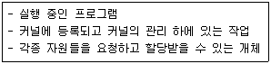
- Page
- Semaphore
- Monitor
- Process
(정답률: 79%)
79. 다음 중 천재지변이나 사고로 인해 정보의 손실이나 파괴를 막기 위해 취할 수 있는 방법으로 가장 올바른 것은?
- 파일시스템을 체계적으로 잘 정리한다.
- 백업(Back-up)을 주기적으로 실시하여 안전한 곳에 보관한다.
- 컴퓨터에 안전장치를 하고, 필요할 때만 조심해서 사용해야 한다.
- 사고는 컴퓨터가 가동될 때만 발생함으로 사용 후에는 컴퓨터 전원을 반드시 꺼 놓는다.
(정답률: 76%)
80. 파일 디스크립터에 대한 설명으로 옳지 않은 것은?
- 보조기억장치상의 파일의 위치 및 최초 수정 날짜 및 시간에 대한 정보를 포함한다.
- 파일시스템이 관리하므로 사용자가 직접 참조할 수 없다.
- 보조기억장치에 저장되어 있다가 파일이 개방(Open) 될 때 주기억장치로 옮겨지는 것이 일반적이다.
- 파일마다 독립적으로 존재한다.
(정답률: 33%)
5과목: 정보통신개론
81. 다음 중 인터넷 응용서비스에서 가상터미널(VT) 기능을 갖는 것은?
- Ftp
- Gopher
- Telnet
- Archie
(정답률: 64%)
82. 데이터 교환방식 중 데이터를 패킷단위로 전송하는 것은?
- 회선교환
- 메시지교환
- 패킷교환
- 축적교환
(정답률: 76%)
83. HDLC 프레임 구조 내 제어부에서 회선의 설정, 유지 및 종결을 담당하는 것은?
- 감독 프레임(Supervisory Frame)
- 무번호 프레임(Unnumbered Frame)
- 정보 프레임(Information Frame)
- 동기 프레임(Synchronize Frame)
(정답률: 39%)
84. 다음 중 베이스밴드(base band) 방식의 변조에 해당되는 것은?
- 주파수편이 변조(FSK)
- 위상편이 변조(PSK)
- 펄스코드 변조(PCM)
- 진폭편이 변조(ASK)
(정답률: 48%)
85. 순환중복 검사 방식에 관한 설명으로 틀린 것은?
- 문자 단위로 데이터가 전송될 때, 에러를 검출하는 방식이다.
- 생성다항식은 CRC-16, CRC-32 등이 있다.
- 수신단에서 CRC 부호로 에러를 검출한다.
- 여러 비트에서 발생하는 집단성 에러도 검출이 가능하여 신뢰성이 우수하다.
(정답률: 42%)
86. OSI-7 참조 모델 중 데이터링크 계층의 주요 기능이 아닌 것은?
- 데이터링크 연결의 설정과 해제
- 프레임의 순서제어
- 오류제어
- 경로선택 및 다중화
(정답률: 54%)
87. 다음 중 광대역 통신망 ATM 셀(Cell)의 구성으로 옳은 것은?
- 헤더 5옥테드(octet), 페이로드(Payload) 53옥테드
- 헤더 4옥테드(octet), 페이로드(Payload) 53옥테드
- 헤더 5옥테드(octet), 페이로드(Payload) 48옥테드
- 헤더 4옥테드(octet), 페이로드(Payload) 48옥테드
(정답률: 59%)
88. 다음 중 ITU-T 권고안에서 X 시리즈의 내용은?
- PSTN을 이용한 데이터전송에 관한 사항
- 축적프로그램 제어식 교환의 프로그램에 관한 사항
- 공중데이터통신망을 이용한 데이터전송에 관한 사항
- 전신 데이터의 전송 및 교환에 관한 사항
(정답률: 60%)
89. 데이터 전송에서 1차원 Parity에 대한 설명으로 적합한 것은?
- 수신된 데이터에서 전송 오류를 무시한다.
- 수신된 데이터에서 전송 오류의 검출을 행한다.
- 수신된 데이터에서 전송 오류의 정정을 행한다.
- 수신된 데이터에서 전송 오류의 검출과 정정을 행한다.
(정답률: 67%)
90. 텔레마틱(Telematics) 서비스에 대한 설명으로 틀린 것은?
- 비디오텍스는 화상 정보를 DB에 축적한 후, 상호 대화형식으로 가입자에게 필요한 정보를 제공한다.
- 텔레텍스트는 이동전화를 이용하여 상호 대화형식으로 문자 등의 정보를 제공한다.
- 텔레텍스는 이용자가 직접 문서의 내용을 편집, 수정, 검색, 저장을 할 수 있다.
- 전자우편은 메시지나 문서를 컴퓨터 등에 의해 수신측에 배달하는 서비스를 말한다.
(정답률: 33%)
91. ISDN에서 제공하는 베어러서비스에 해당되는 것은?
- G4 FAX
- TV 화상회의
- 비디오텍스
- 회선교환
(정답률: 47%)
92. 다음 중 PCM 방식에서 음성신호의 표본화 주파수가 8[kHz]인 경우 표본화 주기[us]는?
- 125
- 250
- 500
- 1000
(정답률: 46%)
93. 다음 중 광섬유 케이블에서 클래드(Clad)의 주 역할은?
- 광 신호를 반사시키는 역할
- 광 신호를 증폭시키는 역할
- 광 신호를 저장시키는 역할
- 광 신호를 입력시키는 역할
(정답률: 60%)
94. 다음 중 데이터 통신시스템의 구성에서 데이터 전송계에 해당하지 않는 것은?
- 단말장치(DTE)
- 데이터 전송회선
- 통신제어장치
- 데이터 처리장치
(정답률: 46%)
95. 다음 중 통신제어 장치의 기능에 해당하지 않는 것은?
- 문자의 조립 및 분해
- 전송 제어
- 오류 검출
- 통신 신호의 변환
(정답률: 29%)
96. IP 주소의 수는 한정되어 있으므로 어떤 기관에서 배정 받은 하나의 네트워크 주소를 다시 여러 개의 작은 네트워크로 나누어 사용하는 것은?
- subnetting
- IP address
- SLIP
- MAC
(정답률: 60%)
97. 다음 중 다른 프로토콜을 사용하는 망과 LAN을 연결할 때 사용되는 것은?
- Adapter
- Repeater
- Gateway
- Bridge
(정답률: 61%)
98. 다음 중 뉴미디어의 특징과 거리가 먼 것은?
- 정보교환의 고속화와 대용량화
- 다채널성
- 단방향성
- 정보형태의 다양화
(정답률: 76%)
99. OSI-7 계층 중에서 암호화, 데이터 압축, 코드변환 등의 기능을 수행하는 계층은?
- 트랜스포트계층(Transport Layer)
- 응용계층(Application Layer)
- 세션계층(Session Layer)
- 프리젠테이션계층(Presentation Layer)
(정답률: 45%)
100. 통화 중에 이동전화가 한 셀에서 다른 셀로 이동 때, 자동으로 다른 셀의 통화 채널로 전화해 줌으로써 통화가 지속되게 하는 기능은?
- 핸드오프
- 핸드쉐이크
- 셀의 분할
- 페이딩
(정답률: 64%)
The degree of the resulting relation will be the sum of the degrees of A and B, which is 5 + 2 = 7. Therefore, the correct answer is "cardinality 12 and degree 7".